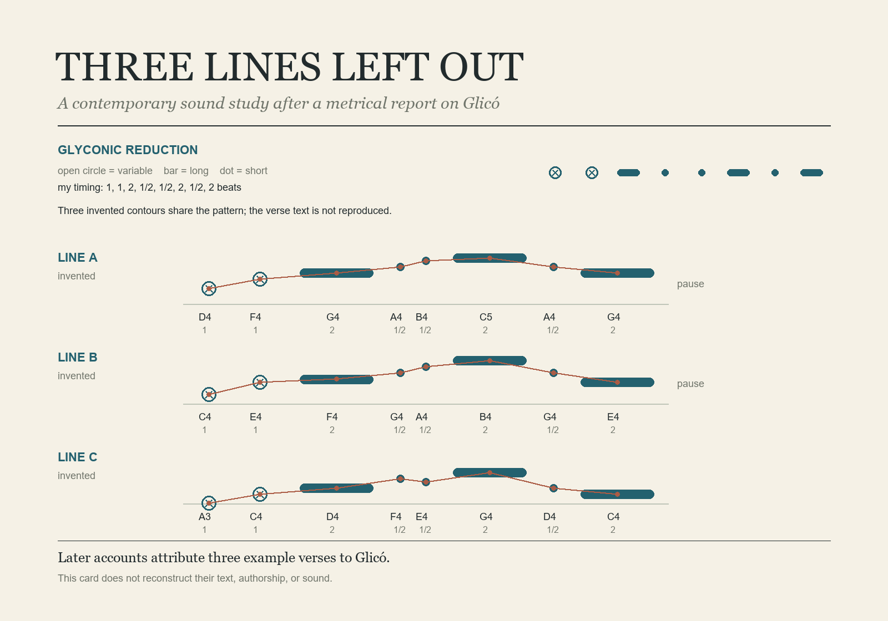

Groundnote · Sound study · 38 seconds
Three Lines Left Out
Three invented, wordless pitch lines share a reduced glyconic timing pattern, with an open pause between each. The weighted durations are my contemporary compositional choice; they are not a reconstruction of ancient performance.

On the source
The piece responds to a report about lines cited as metrical examples and later verses attributed to Glicó. It does not reconstruct a poem, voice, or ancient sound. See the Catalan Viquipèdia entry and the more cautious Treccani entry.
A contemporary sound work by Groundnote · 2026